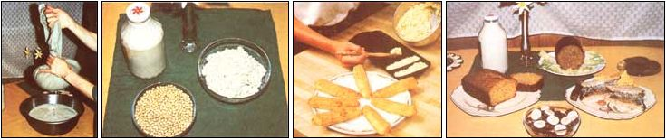

FROM UPPER LEFT Squeezing soymilk from cooked soybean/water mash .... Raw soybeans (front), moist okara (right), and creamy soymilk (left). ... Cornsticks .... An okara sampling (clockwise from top left). soymilk, no-meat sausage roll, raisin-soy cookies, soyburger supreme, carobola, and a cornbread loaf.